A fast, deterministic mean-field (ODE) twin of the malariasimulation individual-based model of Plasmodium falciparum malaria — same inputs, seconds per run, population-independent.
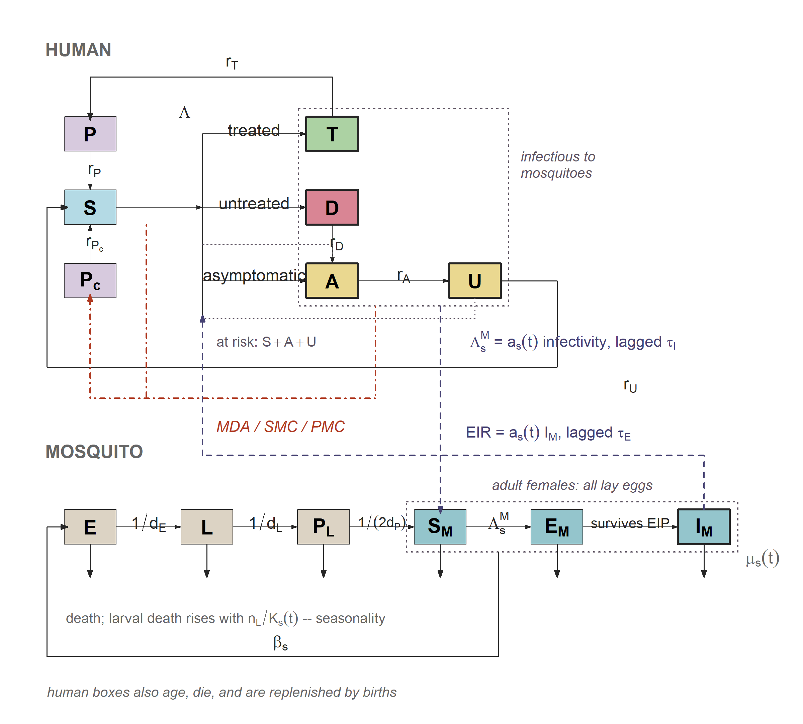
The model at a glance: human compartments above, mosquito below. Solid black = a flow of individuals, a rate in the ODE. Dashed purple = a scalar coupling, where nobody moves. Dashed red = a discrete state jump. Dotted grey = a grouping, not a compartment: the infectious pool above, the adult females below. Every human box is an array over age × biting heterogeneity. Not drawn: the immunity arrays, the Erlang lag chains, human demography, the species dimension, and the resistance split of T — see vignette("model").
What it is
blink reproduces the Griffin-style, age- and biting-heterogeneity-structured human model — states S / D / A / U / Tr plus two prophylaxis compartments (Ph, treatment-linked, and Ph_c, chemoprevention) and the six immunity functions — four acquired states (IB / ICA / ID / IVA) plus the two maternal terms (ICM / IVM), which are algebraic rather than state variables — coupled to the compartmental mosquito model (E / L / P / Sm / EIP-chain / Im per species). It is written in odin2 / dust2.
It exists to give the malariasimulation ecosystem a deterministic, Monte-Carlo-free companion that:
-
Takes the same inputs as the IBM.
run_simulation_ode()accepts amalariasimulation::get_parameters()list (with the usualset_*intervention builders layered on) unchanged. P. falciparum only. -
Is seeded at, and validated against, equilibrium. Initial conditions come from
malariaEquilibrium; with no interventions the model holds flat at that equilibrium to machine precision, and reproduces the IBM’s equilibrium PfPR within the IBM’s Monte-Carlo error. -
Produces postie-compatible outputs. The returned wide count table feeds straight into
postie::get_rates()/postie::get_prevalence();get_epi_outputs()returns both as a list. - Is fast and population-independent. All human/mosquito compartments are per-capita densities, so a 20-year daily run takes on the order of a couple of seconds regardless of the modelled population size.
Reach for the IBM instead when you need stochastic variation, individual heterogeneity beyond the mean field, or P. vivax.
Install
# install.packages("remotes")
remotes::install_github("pwinskill/blink")The GitHub-only core dependencies (odin2, dust2, malariaEquilibrium) are pulled automatically from DESCRIPTION Remotes. The examples below also need two suggested packages:
remotes::install_github(c("mrc-ide/malariasimulation", "mrc-ide/postie"))malariasimulation is used to build the parameter list; postie powers get_epi_outputs().
Quick start
library(blink)
p <- malariasimulation::get_parameters()
# 10-year daily wide count table (malariasimulation-style columns)
out <- run_simulation_ode(timesteps = 3650, parameters = p, init_EIR = 20)
# postie-format rates (long) and prevalence (wide)
epi <- get_epi_outputs(out)
epi$prevalence$lm_prevalence_2_10
epi$rates[, c("time", "age_lower", "age_upper", "clinical", "severe", "dalys")]The output has timesteps + 1 rows: row 1 is the seeded equilibrium (day 0), rows 2..N are integrated days. Incidence columns (n_inc_clinical_*, n_inc_severe_*) are per-day counts — pass the table to postie unthinned.
Layer interventions with the ordinary malariasimulation builders and re-run; everything is applied automatically from the parameter list (no extra arguments):
p <- malariasimulation::set_drugs(p, list(malariasimulation::AL_params))
p <- malariasimulation::set_clinical_treatment(p, drug = 1, timesteps = 1, coverages = 0.4)
p <- malariasimulation::set_bednets(
p, timesteps = 365, coverages = 0.6, retention = 3 * 365,
dn0 = matrix(0.387, 1, 1), rn = matrix(0.563, 1, 1),
rnm = matrix(0.24, 1, 1), gamman = 2.64 * 365)
out <- run_simulation_ode(timesteps = 3650, parameters = p, init_EIR = 20)If you have already called malariasimulation::set_equilibrium(), init_EIR is read from the parameter list and can be omitted. For a step-by-step tour see vignette("blink").
Exported functions
| Function | Purpose |
|---|---|
run_simulation_ode() |
Run the model; returns a wide, malariasimulation-style daily count table. |
get_epi_outputs() |
Post-process a run into postie rates (long) + prevalence (wide). |
default_age_lower() |
The default graded age grid (fine in infancy, coarse in adulthood). |
Feature support
Everything malariasimulation models for P. falciparum is represented, each seeded so the equilibrium is preserved until the intervention’s scheduled start.
| Module | Status | How it is modelled |
|---|---|---|
| Core transmission (human + mosquito + 6 immunity functions) | ✅ Full | odin2 ODEs over [age, heterogeneity]
|
| Biting heterogeneity | ✅ Full | Gauss–Hermite log-normal nodes (n_heterogeneity_groups) |
Custom demography (set_demography) |
✅ Full¹ | Age-specific mortality → equilibrium age structure |
| Clinical treatment (time-varying, multi-drug) | ✅ Full | Summed coverage ft(t); drug-linked efficacy/infectivity/prophylaxis |
| Antimalarial resistance | ✅ Full² | Early-treatment-failure + slow-parasite-clearance, coverage-weighted |
| Bed nets | ✅ Full³ | Mean-field per-species a(t), mu(t)
|
| IRS (spraying) | ✅ Full | Mean-field per-species a(t), mu(t)
|
| Chemoprevention (MDA / SMC / PMC) | ✅ Full | Pulsed mass drug administration between ODE segments |
| Vaccines — PEV (RTS,S / R21, EPI + mass, boosters) | ✅ Full | Per-(age, time) infection-hazard multiplier |
| Vaccines — TBV | ✅ Full | Per-infection-state transmission-blocking (TBA) |
| Seasonality + flexible carrying capacity | ✅ Full | Fourier rainfall drives larval K(t)
|
| P. vivax | ⛔ Not supported | Rejected at input |
| Individual-mosquito path | ⛔ N/A | Model is always compartmental |
¹ Age-specific mortality is time-varying: mu_age(t) is interpolated over deathrate_timesteps, and the baseline (t = 0) row seeds the equilibrium age structure. Match default_age_lower(max_age =) to the top deathrate_agegroups (see Approximations). ² The two arms malariasimulation actually implements. Its partner-drug and late-failure / reinfection-during-prophylaxis arms are individual-level and are rejected upstream by set_antimalarial_resistance, so they never reach this model. ³ Both exponential (log-uniform) and logistic net retention are supported. With repeated distributions, net usage is the full mean-field mixture over all past distributions (most-recent-receipt × retention survival), not just the latest.
Mean-field approximations
The model is honest about where and how much it departs from the IBM. What follows is the summary; vignette("model") is the canonical version, with the full ODE system, a table of what each state dimension carries (and what is captured without one), and an argument-by-argument breakdown of every malariasimulation set_* function.
Seeding. blink starts each run at the malariaEquilibrium analytic fixed point. That solution encodes simplified forms — a linear force of infection, refractory immunity boosting on the raw rate, exponential incubation survival — whereas blink now reproduces malariasimulation’s own per-day semantics (bite deduplication, the integer refractory window, a fixed-delay EIP with exp(-mu*dem) survival, whole-day state sojourns). The seed is therefore a close approximation to blink’s true fixed point rather than the fixed point itself: an undisturbed run relaxes by up to ~0.5% over the first years and then holds. malariasimulation behaves the same way — it is seeded from malariaEquilibrium too and drifts off it. Burn in before calibrating, and set parameters$bite_dedup = 0 if you need the exactly-flat (approximate-dynamics) behaviour for a numerical test.
Numerics & lags. The human EIR/FOIM lags and the mosquito EIP are implemented as Erlang (linear-chain) filters rather than delay() — robust, pure-ODE, and exact at equilibrium. Stage counts (n_eir, n_foim, n_eip; defaults 10 / 10 / 20) are tunable: larger values sharpen the gamma-shaped lags toward the IBM’s fixed delays. The disease-state seed re-solves the prophylaxis aging recursion with a corrected bP term (upstream malariaEquilibrium::human_equilibrium_no_het has a small artifact), so the model holds flat even under treatment (ft > 0).
Infection hazard. malariasimulation draws each day’s bites from a Poisson and collects the bitten in a bitset, so an individual bitten several times in one timestep is infected at most once. blink reproduces that cap: the daily infection probability is (1 - exp(-EPS)) * b, converted to a hazard with -log(1 - p) (matching the IBM’s prob_to_rate). This saturates, whereas the unbounded product b * EPS over-predicts infection wherever exposure approaches one infectious bite per person per day — at seasonal peaks and in high-zeta strata. The two forms agree to <2% at low exposure. Because malariaEquilibrium assumes the linear form, the seed is an exact fixed point only with parameters$bite_dedup = 0; with the default the model relaxes off the seed over the first years, exactly as the IBM does (it is seeded the same way).
Treatment & resistance. Drug prophylaxis is a single mean-duration compartment (the Weibull is represented by its mean, so decay is exponential rather than the sharper Weibull) — equilibrium-exact, transient-approximate. Slow parasite clearance is not averaged: Tr is split into two parallel compartments (Tr/Tr_slow), reproducing the IBM’s two-component mixture of exponentials exactly. Antimalarial resistance (early-treatment-failure and slow-parasite-clearance) is blended across all treatment drugs by their share of treatment and also applies to a drug used for chemoprevention (SMC/MDA/PMC). The multi-drug blend is time-varying: drug efficacy, treated infectivity (cT) and the prophylaxis rate are interpolated over the treatment-coverage change times using each drug’s instantaneous share, so a first-line switch is modelled rather than frozen at a constant mixture.
Vector control. Net/IRS efficacy is population-averaged over the net-using / sprayed fractions into per-species a(t), mu(t). Both exponential (log-uniform) and logistic net retention are supported, and repeated distributions accumulate as the full mean-field mixture over all past rounds (each weighted by most-recent-receipt probability, with its own net-age efficacy decay); IRS accumulates the same way but without a retention factor (sprayed protection never expires in the IBM). Because coverage is population-averaged rather than per-individual, under nets/IRS the ODE tends to under-suppress transmission relative to the IBM through the intervention era (the correlated protection of the same individuals across bites is a mean-field gap; larger than the ≤ ~5% single-round equilibrium bias).
Chemoprevention. MDA/SMC/PMC are applied as pulses between ODE segments: a fraction (coverage × drug efficacy × (1 − resistance ETF)) of the target age band is cleared and moved to the chemoprevention prophylaxis compartment Ph_c. The target band is mapped onto the model age groups by fractional overlap, so narrow bands (e.g. PMC dose ages) are captured rather than dropped and coarse groups are not over-treated. Co-deployed chemoprevention types share a coverage-weighted Ph_c decay. PMC (age-triggered in the IBM) is approximated as ~monthly pulses over each dose-age band; pulses take effect the day after their scheduled timestep.
Vaccines. PEV reduces the infection hazard by a per-age, per-time factor. Efficacy is the expectation of the Hill curve over the per-individual antibody distribution the IBM samples — a 4-D Gauss–Hermite rule over cs/rho/ds/dl (any create_pev_profile(), including RTS,S and R21). Evaluating at the profile median instead would overstate R21 efficacy by up to ~4.7 pp; the quadrature matches a Monte-Carlo of the IBM’s own sampler to <5e-4. The full booster sequence is modelled — the vaccinated are partitioned by the most recent booster each has reached, each stratum carrying its own decayed efficacy — for EPI and mass campaigns. EPI uses time-varying coverage (each cohort protected at the coverage in force on its vaccination date); mass campaigns apply every target age band at every campaign, with decaying efficacy (the vaccinated cohort does not age out of the band). Seasonal PEV boosters are approximated as a fixed days-since-primary schedule (warned). TBV reduces onward infectivity via the state-specific transmission-blocking-activity transform over the exact target ages, matching the IBM.
Seasonality. Rainfall is the truncated Fourier series (matching the IBM), driving K(t) = K0 · scaler(t) · rainfall(t) / R̄. The seed is the annual-mean state, so the first ~10 years are a transient onto the limit cycle and the seasonal annual-mean EIR sits a few percent below the aseasonal init_EIR target (nonlinear averaging) — burn in before calibrating. A carrying-capacity scaler of exactly 0 is floored at a small residual (K0 · 1e-4), so complete vector elimination is not reproduced exactly.
Demography. Custom demography is time-varying: mu_age(t) is a constant-interpolated series over deathrate_timesteps (the baseline row seeds the equilibrium age structure, then the age-specific mortality evolves with the demographic transition). If the oldest model age group exceeds the top deathrate_agegroups, ages above it take the top death rate here whereas the IBM removes them — raise default_age_lower(max_age =) or extend deathrate_agegroups to match (a warning fires when they diverge).
Diagnostic conventions.
-
PCR prevalence counts all of
D / Tr / A / U(the malariasimulation IBM convention), not malariaEquilibrium’s sub-patent-weightedpos_PCR. LM prevalence and clinical incidence match the IBM to under ~1%. -
Severe incidence follows the malariaEquilibrium convention and is far more sensitive to the immunity model than prevalence or clinical incidence: the steep severe Hill function amplifies the small differences in acquired immunity and disease-pool composition between the mean field and the IBM, so it can differ by ~5–20% (largest at low EIR). (A separate, smaller, opposite-signed effect: the IBM adds a
+0.5offset to acquired immunity before the severe Hill function. That is a per-individual detail which does not carry over to a stratum mean, and an A/B against the IBM ensemble mean favours omitting it — hence the defaultacquired_immunity_offset = 0. Set it to0.5to reproduce the IBM’s literal Hill calls.) Treat severe incidence — and the DALYs derived from it — as indicative. - Reported
EIRis per adult per year (equalsinit_EIRat equilibrium). Compare with a malariasimulation run asEIR_<species> / human_population × 365.
Validation
The comparison/ directory runs each scenario through both models on the same parameter list — the IBM burned in ~30 years to its stochastic steady state, the ODE seeded at the malariaEquilibrium fixed point — and renders IBM-vs-ODE figures. Reproduce with:
source("comparison/run_comparison.R") # equilibrium + intervention scenarios (Figures A-F)
source("comparison/run_incidence.R") # clinical & severe incidence time series (inc_* figures)Across the equilibrium and intervention scenarios the ODE tracks the IBM closely — for example equilibrium PfPR(2–10) agrees to ≤ 0.012 across EIR 1–120, the age-prevalence profile at EIR 20 to max |IBM − ODE| = 0.008, and the custom-demography under-5 population fraction to within 0.002 (IBM 0.090 vs ODE 0.088). In the figures, colour, line type and point shape all encode the IBM/ODE distinction, so they stay legible in greyscale and under colour-vision deficiency.
Note. The figures below were generated before the exact-replication pass described in
NEWS.md. The prevalence-based panels are unaffected (they plot per-band prevalence directly), but the incidence panels predate the output-band fix and the model changes, and should be regenerated withsource("comparison/run_comparison.R")/run_incidence.R. For the current, broader picture see the validation table inNEWS.md(63 countries, monthly, clinical slope 1.02 / severe 0.967).
Equilibrium & structure
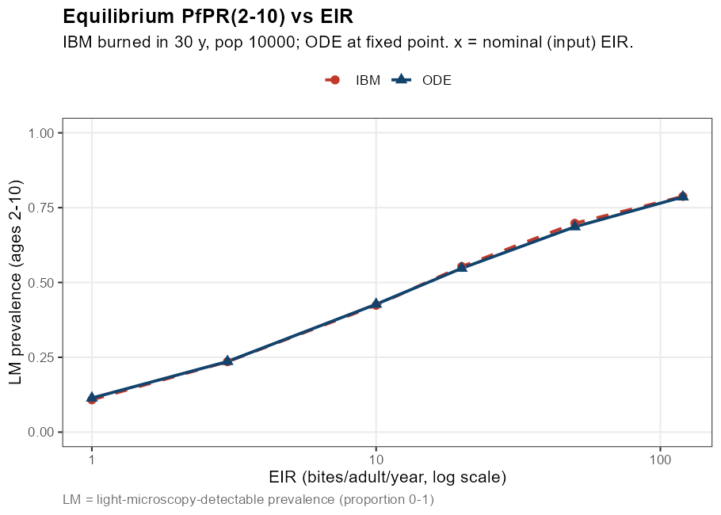 |
A. Equilibrium PfPR(2–10) across EIR 1–120 (log x). |
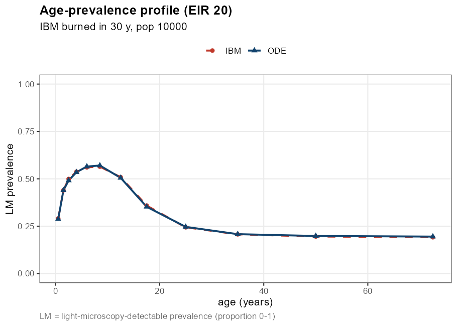 |
B. Age-prevalence profile at EIR 20. |
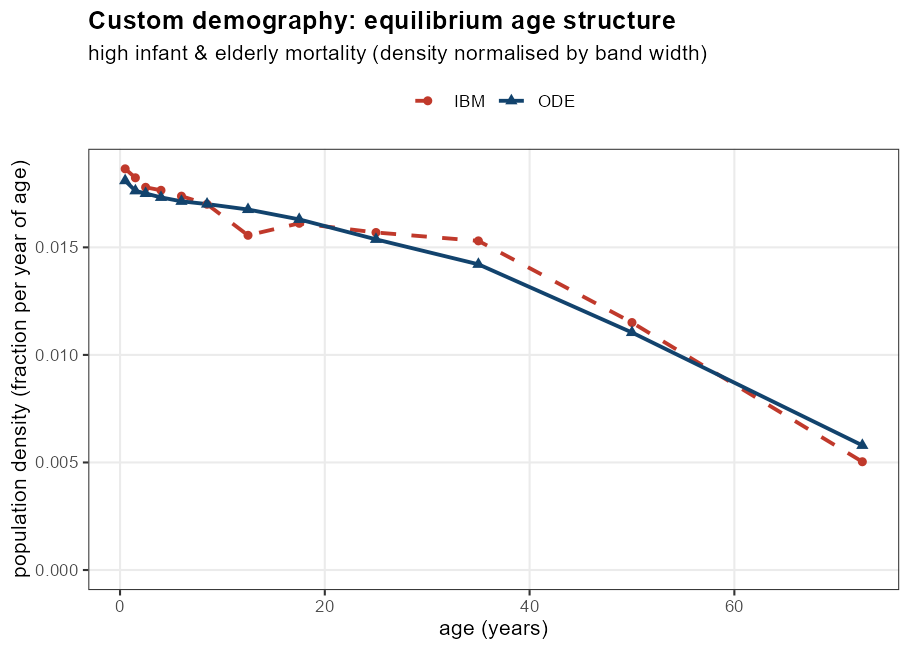 |
F1. Custom-demography equilibrium age structure (density per year of age) under high infant & elderly mortality. |
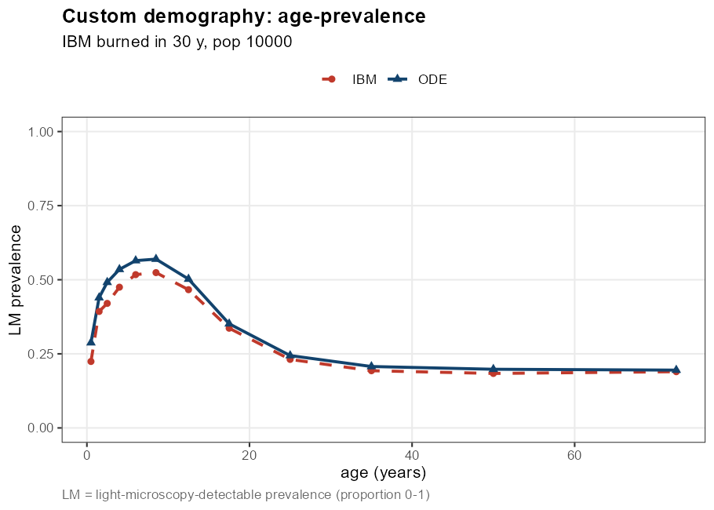 |
F2. Age-prevalence under that custom demography. |
Interventions (prevalence)
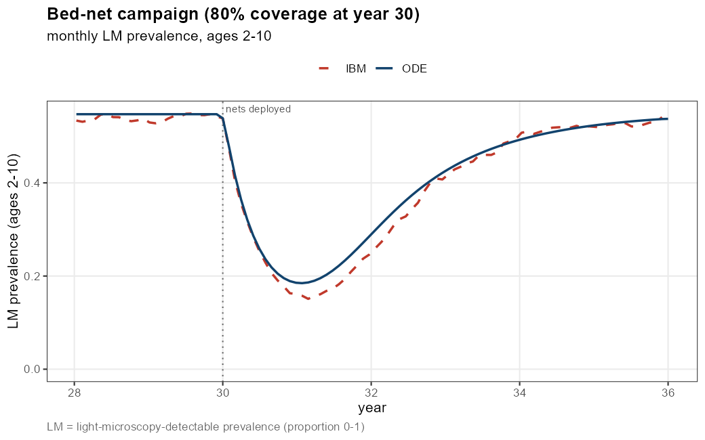 |
C. Bed-net campaign (80% coverage at year 30), monthly LM prevalence (2–10). |
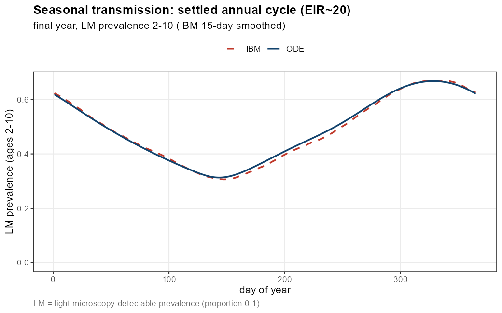 |
D. Seasonal transmission, settled annual cycle (EIR ≈ 20). |
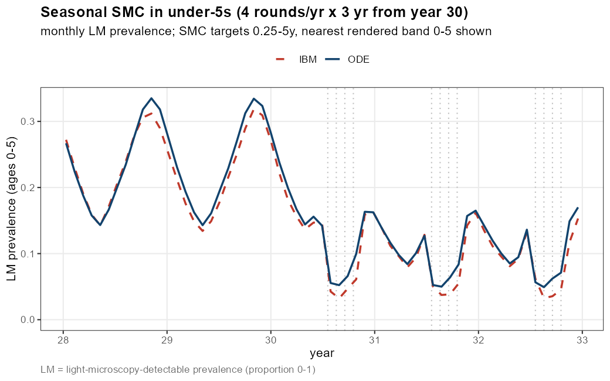 |
E. Seasonal SMC in under-5s (4 rounds/yr × 3 yr from year 30). |
Interventions (clinical & severe incidence, under-5, monthly-annualised)
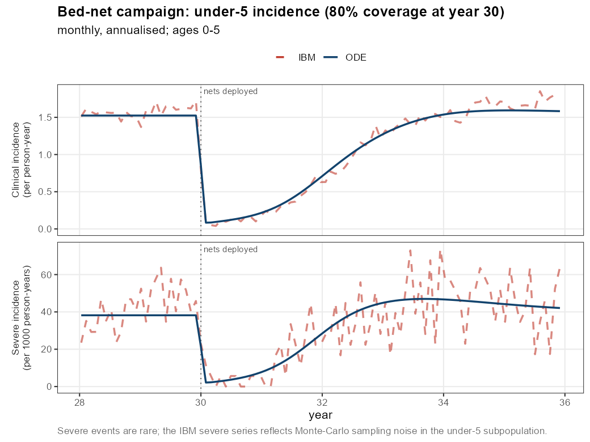 |
inc_nets. Bed-net campaign: clinical drops to ~0.1/child/yr and recovers as nets decay. |
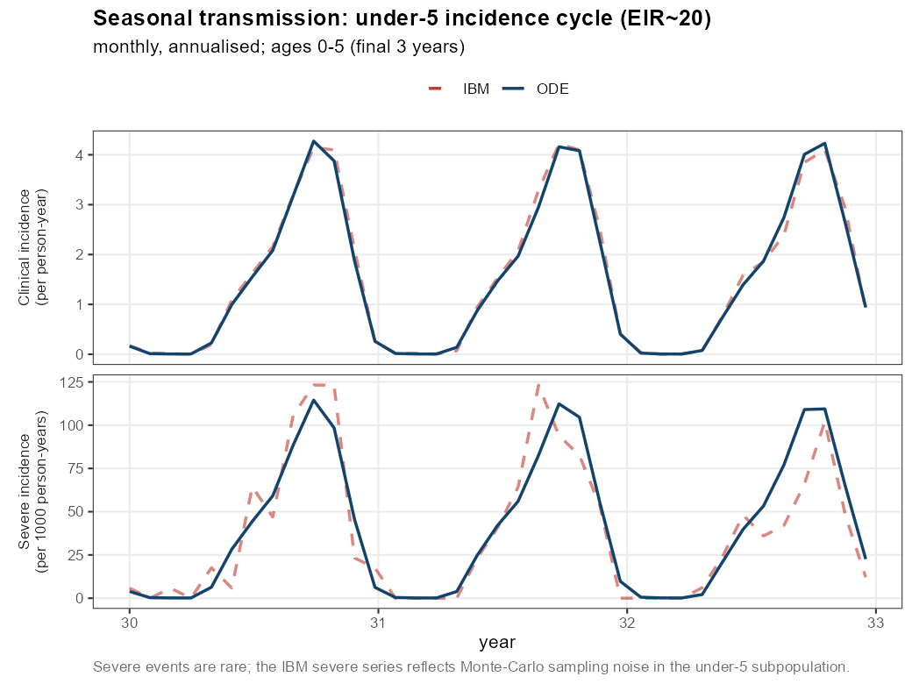 |
inc_seasonal. Seasonal transmission cycle in clinical & severe incidence. |
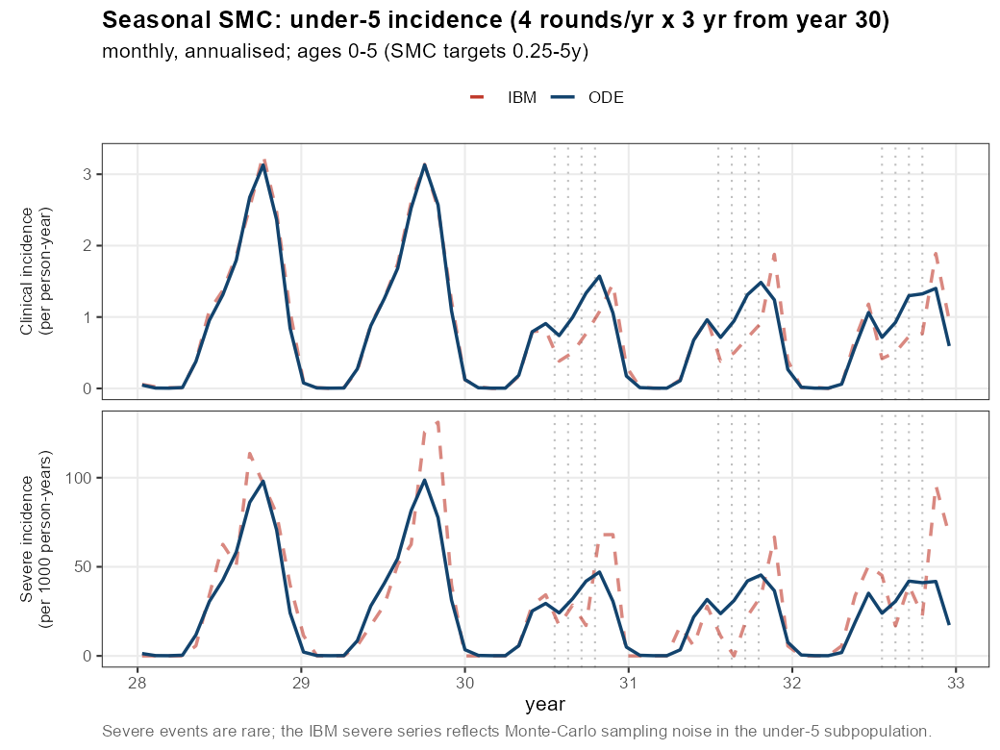 |
inc_smc. Seasonal SMC suppressing under-5 incidence. |
Notes & conventions
-
Deterministic seed. The equilibrium seed is deterministic; there is no random component to a
blinkrun. -
Column stability. Output column names are stable across parameter sets (interventions on/off), so runs are directly comparable and
rbind-able. -
Population conservation. Under constant-hazard or custom demography the total human population is conserved to numerical tolerance (a useful sanity check:
S_count + D_count + A_count + U_count + Tr_count + Ph_count).
Further reading
- Getting started:
vignette("blink"). -
Formal model specification:
vignette("model")— the full ODE system, what each state dimension captures (and what is captured without one), and an argument-by-argument table of everymalariasimulationset_*function. - Function reference:
?run_simulation_ode,?get_epi_outputs,?default_age_lower. - Model source:
inst/odin/malaria_ode.R(the odin2 model). - Parameter translation & equilibrium seeding:
R/build_inputs.R,R/translate_params.R,R/mosquito_equilibrium.R. - Intervention time-series builders:
R/interventions.R; run loop & rendering:R/run.R; post-processing:R/postie.R. - Validation harness:
comparison/run_comparison.R,comparison/run_incidence.R,comparison/plot_helpers.R.